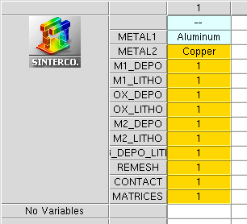

Sentaurus Interconnect
5. Example: Electrostatic, Electrical, and Thermal Analyses (3D)
5.1 Overview
5.2 Building the 3D Structure
5.3 Electrostatic, Electrical, and Thermal Analyses
Objectives
- To create a 3D interconnect structure.
- To show how to perform electrostatic, electrical, and thermal analyses.
- To demonstrate how to extract the capacitance, resistance, and thermal resistance matrices.
5.1 Overview
In this example, you will use Sentaurus Interconnect for electrostatic, electrical, and thermal analyses to calculate the capacitance, resistance, and thermal resistance matrices of the equivalent circuits.
To better understand all steps of this project, you are strongly encouraged to study the example in Section 4. Example: Thermoelectromechanical Analysis of an Interconnect (3D). The model is built in the same way, based on a layout that has been extended adding a third metal layer. The meshing strategy is also the same. The main difference is the solution part, where three subsequent analyses are performed (electrostatic, electrical, and thermal), and the corresponding matrices are extracted.
As for the previous example, a basic knowledge of Sentaurus Workbench and Silicon WorkBench is required. For details about these tools, see the Sentaurus Workbench module and Silicon WorkBench Interface module.
The complete project can be investigated from within Sentaurus Workbench in the directory Applications_Library/GettingStarted/sinterconnect/3D_Matrix_Calculation.
5.2 Building the 3D Structure
The methodology to create the 3D model for this example is exactly the same as in Section 4. Example: Thermoelectromechanical Analysis of an Interconnect (3D). A layout is used for patterning all the metal layers and the dielectric. In this example, a third level of metallization has been added on top of the previous ones in Section 4. Figure 1 shows the general view of the layout with the defined simulation domain SIM3D1.
{kind=link}
Figure 1. General view with all layers of the layout used to create the masks for patterning metal 1 (green), SiO2 (yellow), metal 2 (blue), and metal 3 (cyan). The contacts on the pads of metal 1 and metal 2 also are defined in the layout (magenta). The layout is a modified version of the one used in Section 4 (see Figure 1). (Click image for full-size view.)
5.2.1 Process
All the processing steps up to the patterning of metal 2 are identical to the ones described in Section 4.2.2 Process Sequence. The modified layout Model2_lyt.mac also is imported into Sentaurus Interconnect in the same way:
icwb gds.file= "@pwd@/Model2.gds" cell= "base" scale= 1e-2 \
layer.numbers= {0:0 1:0 2:0 3:0 4:0 5:0 6:0} \
layer.names= {0:0 1:0 2:0 3:0 4:0 5:0 6:0} \
domain.name= SIM3D1 sim3d= "-220.0 -170.0 1380.0 1190"
The Sentaurus Workbench project used here has an extra split named M3_DEPO_LITHO after M2_LITHO that combines the deposition of the second layer of oxide and the patterning of metal 3 (see Figure 2) using the mask 6:0_n. The split MATRICES contains the definitions of the required solutions for the capacitance, resistance, and thermal resistance matrices.

Figure 2. Sentaurus Workbench setup of the project, similar to the setup of the previous example (see Section 4, Figure 4).
All the process steps before the split M3_DEPO_LITHO are identical to Steps 1–3 of Section 4.2.2 Process Sequence. The last deposition of oxide and the patterning of metal 3 (copper) are performed using the followingdeposit, photo, and etch commands:
#split M3_DEPO_LITHO
deposit region.name=Oxide2 Oxide type= fill coord=-2.500
deposit region.name=Metal3 @METAL2@ anisotropic thickness=0.6
photo mask= {6:0_n}
etch @METAL2@ thickness= 1.000 aniso
strip photo
Note that you have given names to the regions created with the deposit command. This will be helpful in the analyses that follow because you can easily read the solution outputs and find the corresponding extracted values for each region. The subregions created after etching a layer inherit the parent region name followed by a number depending on their position in space (for example, Metal3.1, Metal3.2). In your model, the three lines of metal 3 have been given names according to the Z-coordinate value, ranked from the smallest Z to the highest: Metal3.1, Metal3.2, and Metal3.3, respectively.
For more information about region-naming, see the Sentaurus™ Interconnect User Guide, "Regionwise Parameters and Region Name-Handling".
Figure 3 shows the final structure without the oxide layers for clarity. Regions outlined in orange are identical to those of Section 4.2.2, Figure 9.
{kind=link}
Figure 3. Finalized 3D model. The oxide layers are rendered transparent for clarity, and the regions outlined in orange are identical to those in Section 4.2.2, Figure 9. (Click image for full-size view.)
5.2.2 Remeshing the Model
Before moving to the solution of the problem, it is recommended to refine the mesh of the final model to improve the accuracy of the results. You can use the mask layers 1:0_n, 2:0_n, and 6:0_n for the refinement of the metal lines as follows:
line clear
refinebox clear
refinebox name= all min= $gbbox_min max= $gbbox_max xrefine= 1.0 yrefine= 1.0 \
zrefine= 1.0
refinebox name= Dielectric min= $gbbox_min max= $gbbox_max xrefine= 0.5 \
materials= {Oxide}
refinebox name= Metals min= $gbbox_min max= $gbbox_max xrefine= 0.35 \
materials= {Aluminum Copper}
refinebox Aluminum name= metal1 mask= {1:0_n} mask.edge.refine.extent= 0.5 \
mask.edge.mns= 0.250 mask.edge.ngr= 1.500 min= -0.600 max= -0.000
refinebox Copper name= metal2 mask= {2:0_n} mask.edge.refine.extent= 0.5 \
mask.edge.mns= 0.250 mask.edge.ngr= 1.500 min= -1.800 max= -1.200
refinebox Copper name= metal3 mask= {6:0_n} mask.edge.refine.extent= 0.5 \
mask.edge.mns= 0.250 mask.edge.ngr= 1.500 min= $gbbox_min max= -2.500
refinebox remesh
You can find more information about the refinement method in Section 4.2.3 Remeshing the Model and Section 2.3 Layout-Driven Mesh Refinement.
Figure 4 shows the meshed model after the refinement (oxide layers are rendered transparent for clarity).
{kind=link}
Figure 4. Meshed model after the layout-driven refinement of the metal lines. (Click image for full-size view.)
5.2.3 Contact Definition
The contacts on the pads for metal 1 and metal 2 are created using the layers 4:0 and 5:0 of the layout. The command icwb.contact.mask is used for this reason, and a third contact is added for the substrate region as follows:
#split CONTACT icwb.contact.mask layer.name= 4:0 name= cont1 box @METAL1@ xlo= 0.100 \ xhi=-0.100 !cut.mesh icwb.contact.mask layer.name= 5:0 name= cont2 box @METAL2@ xlo=-1.700 \ xhi=-1.800 !cut.mesh contact bottom name=substrate
Figure 5 shows the final 3D model with the contacts defined. For more information about the contact definition based on masks, see Section 2.4 Layout-Driven Contact Definition and Sentaurus™ Interconnect User Guide.
{kind=link}
Figure 5. Contacts (magenta) defined on the final 3D model. (Click image for full-size view.)
5.3 Electrostatic, Electrical, and Thermal Analyses
Sentaurus Interconnect can perform different types of analysis to extract useful information that can be further used to model equivalent circuits. The available analyses are:
- Electrostatic: Capacitance matrix extraction
- Electrical: Resistance matrix extraction
- Thermal: Thermal resistance matrix extraction
These analyses are mutually exclusive, that is, only one type of analysis can be performed at one time. To select an analysis, use the mode command followed by the argument capacitance, or resistance, or thermal.resistance for electrostatic, or electrical, or thermal analysis, respectively.
5.3.1 Calculating the Capacitance Matrix
The electrostatic analysis is the first that you run in the MATRICES split. The selection, the solution, and the postprocessing are performing using the following commands:
mode capacitance
solve
printCapacitanceMatrix {cont1 substrate}
The printCapacitanceMatrix command prints all the extracted values for the capacitance using all the conducting layers present in the structure. If you have attributed a charge or a charge density on a conductor, it is considered a floating one and is not taken into account in the capacitance calculations. To specify a charge or a charge density on a contact, use the following commands respectively:
supply contact.name= C2 charge= 1.0e-18<Coulomb> supply contact.name= C2 charge.density= 2.5e17<C/cm3>
IMPORTANT Floating conductors or contacts are omitted from the capacitance matrix.
The output for your 3D model is available in the capacitance_matrix.txt file.
Click to view the file capacitance_matrix.txt.
If conducting regions are in contact, Sentaurus Interconnect issues a warning message, and this is also visible in the capacitance extraction tables and matrices. Here, metal 1 and metal 2 are in contact through the oxide via, so their SPICE model capacitance is zero. You can see that the naming of all the conducting regions during the process steps is important to distinguish them in the extracted matrices.
5.3.2 Calculating the Resistance Matrix
The resistance matrix is extracted based on the defined contacts in the structure. In the example, two contacts are retained for the analysis: cont1 and cont2. The substrate contact is not used because it is not attached to a conductor (silicon is considered an insulator here). The resulting resistance matrix can be obtained using the following commands:
mode resistance solve printResistanceMatrix
You can find the resistance and conductance values associated with the contacts cont1 and cont2 in the tables in the resistance_matrix.txt file.
Click to view the file resistance_matrix.txt.
In the tables, you can see that there is only one element in the resistance matrix, and this represents the overall resistance of the metal line between cont1 and cont2 consisting of metal 1, metal 2, and the via.
5.3.3 Calculating the Thermal Resistance Matrix
By default, the thermal resistances that are calculated during the thermal analysis in Sentaurus Interconnect are based on the defined contacts in the structure. Here, the substrate contact also is considered because silicon has a defined thermal conductivity value in the parameter database. Calculating the thermal resistances and printing out of the matrix are performed in a similar way as for the previous analyses:
mode thermal.resistance solve printThermalResistanceMatrix
The resulting output of the analysis, available in the thermal_resistance_matrix.txt file, gives the thermal resistance matrix for the defined contacts cont1, cont2, and substrate.
Click to view the file thermal_resistance_matrix.txt.
As expected, you can see that the resistance between cont1 and substrate is lower than the resistance between cont1 and cont2 as silicon has a lower thermal resistivity than SiO2.
It is possible to choose the printout in the printThermalResistanceMatrix command by specifying only the contacts of interest. For example, if you only need the thermal resistance between cont1 and the substrate, use the command:
printThermalResistanceMatrix cont1 substrate resistance.matrix
There are similar options for the electrostatic and electrical analyses. Refer to the Sentaurus™ Interconnect User Guide for details.
Copyright © 2022 Synopsys, Inc. All rights reserved.